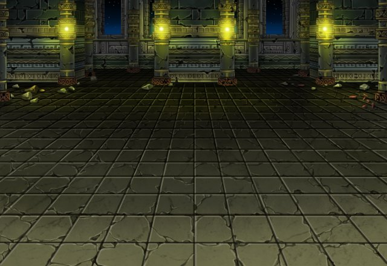

セリア
魔物の攻撃を避ける私の背後から メアの攻撃が……。
セリア
そして、倒れたカルをかばいながら戦う私も この様よ……。
セリア
「お前はShou-chanへ残す メッセージだ」
セリア
「そのためだけに生かしてやる」 ってね……。
セリア
あんなヤツの罠にハメられた上に こんな生き恥をさらすなんて！
ティリス
だって、セリアが生きててくれたんだもん♪
ティリス
それに、カルくんも捕らわれたってことは 生きてるってことでしょ！
ティリス
きっと私のShou-chanが 助け出してくれるよ！
セリア
「私の」ってのと、 こいつに頼るのは気にいらないけど……。
セリア
カルは“白い塔”と呼ばれる場所に 捕らわれているそうよ。
セリア
メアは、そこであんたを待つと 言っていたわ。
セリア
フン、なにカッコ付けて うなずいているのよ。
セリア
どうせ私が言わなくても あんたは助けに行くんでしょ？
ティリス
Shou-chan！ セリアのことは私に任せて！
ティリス
だから、Shou-chanは カルくんを助けてあげて。
ティリス
私もセリアと一緒で Shou-chanのこと信じてるから♪
ティリス
私のShou-chanは 強いんだから～♪